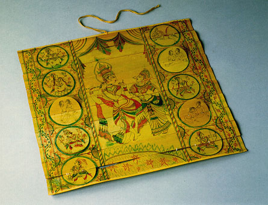

義助慰安婦 —— 李敖百件珍藏義賣藝術品（第66件） 品 名：F5. 古國貝葉春宮圖片 預估價：10 萬 成交價：（保留） 說 明： 貝葉為古印度、尼泊爾等國宗教文化的產品。這個地方因為不會造紙，所以用貝葉取代紙來書寫。這幅圖上的圓形圖案表面上看是神像，但打開之後卻是一張一張的春宮圖。這是李昂小姐雲遊古國歸來送給李敖的。 
貝葉為古印度、尼泊爾等國宗教文化的產品。這個地方因為不會造紙，所以用貝葉取代紙來書寫。這幅圖上的圓形圖案表面上看是神像，但打開之後卻是一張一張的春宮圖。這是李昂小姐雲遊古國歸來送給李敖的。